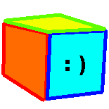
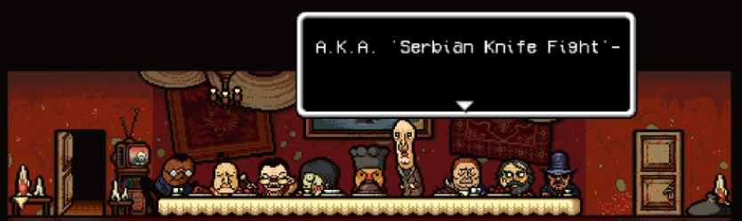

About me


Hello, welcome to my very unorganized and inconcise 'About me' page. My name is Vinny, i'm a 16 years old from Serbia. I like physics, mathematics - geometry, quantum computers, electronics, computer history, hardware, 3D graphics & rendering, low-level programming, operating systems, game engines, game development, 2D and 3D art, drawing, painting, reading, music theory & composition, YTPMV, Siivagunner/'high quality video game rips', philosophy, marxism, chess, modding, gaming, collecting, working out, watching NFL and that's already far too many things. I plan on studying Electrical Engineering, specifically physical electronics or energetics - nuclear. I've been playing piano since i was 8 and i'd love to start learning how to play the saxophone, it is my 2nd favorite instrument (Right behind the piano of course :)). The programming languages i'm most comfortable in are C, C++ and Lua. I also love reading (see books in the reading section here), the most influential work in my life is Homestuck, besides that, i don't really read much fiction books. One of my main literary interests is Marxism, and i myself am a Left-Communist.
I'm one of the co-creators of fishyogurtbacteriavirus, a creative group that focuses on video game projects. In my free time (i don't have a lot of it) i play the piano and i like to make YTPMV and mashup/cover music, sometimes even original music! I've been a participant of the Technical Sciences program at Petnica Research Center since 2026. I love collecting old hardware of any types, peripherals, old terminals, computers, electronic instruments, etc. I compete in mathematics and physics olympiads in my country (Serbia) and have won multiple medals. I love playing games (see below), but nowadays i don't play a whole lot, 90% of the time i'm playing Chess or Super Smash Bros. Melee.
Favorites
Games: Metal Gear Solid 2, Undertale, Terraria, LSD: Dream Emulator, Barotrauma, Mindustry, Fractal Block World, Fallout: New Vegas, Hollow Knight, Dark Souls 2, Deltarune, LISA, Yume Nikki
Albums: Expand image
.png)
Favorite YTPMVers: Colton Watson, Cake, Meltdrum
Anime: Jojo's Bizzare Adventure, Neon Genesis Evangelion, Cowboy Bebop
Animals: Pigeons and Raccoons
Color: Green